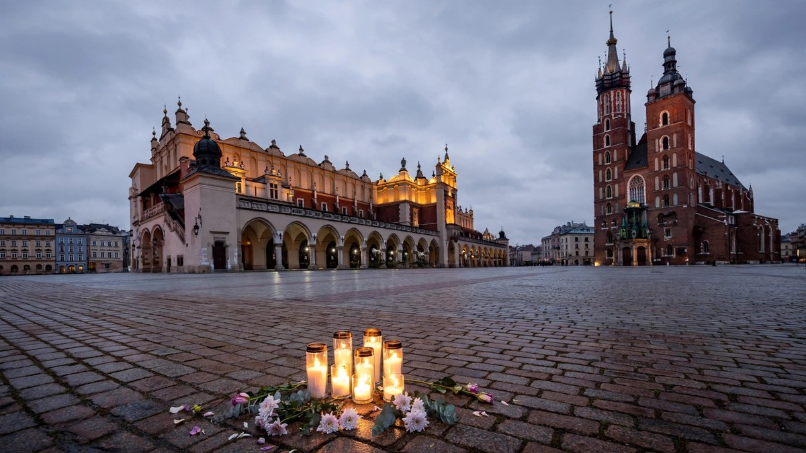

British citizen among six killed in Krakow shooting
Six people were killed and at least 15 wounded when a gunman opened fire in Krakow's Main Market Square on Saturday afternoon. Police said one of the dead was a British citizen.

Sources: Al Jazeera, Glasgow Times
Six people were killed and at least 15 wounded when a gunman opened fire in Krakow's Main Market Square on Saturday afternoon. Police said the dead were four women and two men, and one of them was a British citizen. Officers shot and arrested the gunman, who was taken to hospital.
Read More
Police said the man drove onto the square and began firing at random people from his car, moving between several spots in the square. He acted alone, they said, and was wearing military-style clothing and using a semi-automatic rifle. A number of weapons were found in the car he was driving.
Poland's police chief, Marek Boron, said three of the dead were Polish, one was a citizen of Great Britain, and two had not yet been identified. He said 16 people were injured in total, including the gunman and two police officers, and five of the wounded were foreign nationals. Prime Minister Donald Tusk said three more bodies, two women and a man believed to be members of the gunman's family, were found at the suspect's home.
Interior Minister Marcin Kierwinski said the suspect appeared to be fascinated by far-right ideologies and held ultra-nationalist views. Tusk called the attack an act of terrorism and announced two days of national mourning. Defence Minister Wladyslaw Kosiniak-Kamysz also called the shooting an act of terror.
Britain's Prime Minister, Andy Burnham, said he was shocked and saddened by the appalling shooting and that the United Kingdom stands in solidarity with the people of Poland. Poland's President Karol Nawrocki said his thoughts were with the victims and their families. Krakow, about 250 kilometres south of Warsaw, is Poland's second-largest city and a popular tourist destination, and police said it was the country's deadliest shooting since the fall of communism in 1989.
What People Say
Happens everywhere don’t let it put people off, we was there 3 years ago absolutely fantastic place and the polish people are lovely, I work in Birmingham and felt safer in Poland than I do in Birmingham.
"Everything points to the fact that the shooter was influenced by far-right ideology, a matter that will also be subject to investigation," Interior Minister Marcin Kierwinski told a news briefing.
Today in Poland, a hero wears a uniform! The uniform of the Polish Police.
Just got back home from here last night, beautiful place, lovely people and it really did feel a safe place to be. 😢 so sad RIP to those who’ve lost their lives today ❤️
Incredibly sad, thinking of the victims and their families during this difficult time R.I.P 💔 😢 🌹
 Herzog: no clear winner to form Israel government
Herzog: no clear winner to form Israel government US Strike Reported on Iran's Qeshm Island as Talks Show Progress
US Strike Reported on Iran's Qeshm Island as Talks Show Progress Trump says Bolsonaro can stay in US as long as he wants
Trump says Bolsonaro can stay in US as long as he wants